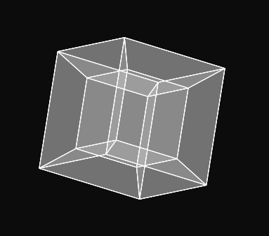

Zacharias,
There are some OS X builds of numpy/scipy available here: http://trichech.us/?page_id=5
I haven't tried using them, but it looks like they would be easier to install than building the packages and dependencies from source. Once installed you should be able to use them in nodebox like any other python module. I agree that they should aid in some interesting visualizations in nodebox.
BTW. The above code is pretty slick. Thanks for posting it.
Thanks for the link! As I understand it, however, those libs are compiled against a 2.5 version of python (which must be installed also, for it to work) and from what I can tell NodeBox runs off the builtin 2.3 version. So although I haven't tried it I get the feeling I will need to coax NodeBox into using python 2.5 -- which I imagine is complicated because the libs shipped with Nodebox are compiled for 2.3
Am I mistaken in this?
I have Numpy installed and it works fine with Python 2.5 but unfortunately, no it doesn't work with Nodebox. I just can't seem to find a platform that can support Numpy and Core Graphics. I was really excited about NodeBox too. Frustrating..
C&Z,
I had some similar issues and ended up rebuilding nodebox from source so it was linked with my 2.5 python. There are instructions here: http://dev.nodebox.net/ Building went surprisingly smoothly and now I have a Nodebox working with python 2.5.
Oh wow, that's great! Thanks Mark. Any luck with Numpy? Hopefully I'll be able to find out soon myself but I'm under some unrelated deadlines so it may be a week or so.
I realize this might take NodeBox off on a different path than originally intended, but did you ever consider bundling a python interpreter in the NodeBox app? That way you could compile include additional packages which could potentially add more powerful mathematical capabilities, as a foundation for more powerful graphics/animation libraries (think linear algebra and dynamical-systems-solvers). Just wanted to throw that out. You could always consider taking *away* certain modules in the standard distribution, in order to reduce app-size.
C,
The numpy distribution linked above seems to work just fine for me in the nodebox built against python 2.5. I haven't tested it extensively but this works with no errors:
from numpy import * print cos(array([0, pi/2, pi]))So at least it is importing with no errors. To be honest I'm not very familiar with numpy and don't really understand the difference between it and numeric, though.
One problem I had with the above link was that I couldn't get matplotlib to work. It complained about the version of numeric I had installed vs. how it was built. I simply rebuilt and reinstalled it from the source and it too works fine now.
Hi everyone,
NodeBox has a good scientific fanbase - people that are interested in doing math and graphing for example. On the other hand, NodeBox also has a good artistic fanbase - people that are interested in fonts and images for example.
If we want to keep everyone happy we basically have two options: create a big app that contains everything, or create a small app that is extensible along with good documentation.
We chose the latter approach: a small set of core functionalities (spartan Python IDE, AppKit, Numeric and PDF export), a growing set of library plug-ins and source code you can build from scratch to suit your own needs. Keeping things small we can get the work done one step at a time.
Consider the alternative with all user requests built in: we would have a cross-platform Windows/Linux/Mac Python interpreter also scriptable in Ruby and Perl, with export functionality for PDF, Quicktime, JPG, Flash, and as a web applet, with rendering of both vectors, pixels and fonts done in OpenGL, audio analysis support, etc. etc.
It sounds great, I know.
And don't get me the wrong way, all of these things ARE on our to-do list one way or another. It will just take some time and a lot of refactoring to avoid ending up with a bug-and-dependency-filled monster.
Right now Frederik is working on the core of Gravital (e.g. NodeBox 2) which will have a node interface and a plugable backend (e.g. it can draw using Cocoa, but also - theoretically at the moment - using OpenGL or ReportLab. It could run cross-platform once someone implements platform-specific GUIs/renderers (I saw some e-mails passing with talk of a Linux port), integration with things like scipy will be easier, etc.
But for now, if you have specific needs, simply build NodeBox from scratch.
C.: did you know Mac has Core Graphics bindings for Python that work right of the box? You can just do:
from CoreGraphics import *Here's some more information:
http://www.onjava.com/pub/a/mac/2004/03/19/core_graphics.html
Z.: great work on the Tesseract! Thanks for sharing us your code.
Thanks for the input tom (and the compliment!) I can totally understand the dev strategy. I was just airing my wishful thinking I guess :)
Hi Tom. Thanks for the response. When I was complaining, I didn't realize that Nodebox could simply be rebuilt from scratch to fit my system. I'm new to the open source movement so it is all a little new to me.
Ironically, my main trouble right now is getting *svn* installed on my Mac so I can follow your straightforward instructions for building.
As for the
from CoreGraphics import *line, it doesn't seem to work in Python 2.5.
It looks like maybe
from Carbon.CG import *might be the replacement for that in 2.5 but I don't know enough about Core Graphics to find out.
Okay I got it compiled and running. It took some wrestling but it's working with Python 2.5 and Numpy! Woohoo! Thanks a lot guys!
Btw: does anyone know an easy way (i.e. a source change) to get my compiled Nodebox to check my Python.Framework folder for dependencies instead of it's own Application Support folder?
In NodeBox.py on line 355 you have:
libDir = os.path.join(os.getenv("HOME"), "Library", "Application Support", "NodeBox")Setting libDir to the path you want will do the trick I think.
Okay. FYI, I changed line 355 to
libDir = "/Library/Frameworks/Python.framework/Versions/2.5/lib/python2.5/site-packages"And it worked. Thanks again, Tom. Just a reminder..
The 4th dimension you mensioned is time. It can't be physical appearance!!
Thank you.
In mathematics and geometry you can have as many dimensions as you like (even infintely many). It's only the physical world which seems restricted to three dimensions of space, and one more (the "fourth dimension") of time.
this concept is wrong if the scientist said that this is four dimension it should be explain firstly clock rotation

Tesseract
Posted by Zacharias Enochsson on May 31, 2007
Heres a NodeBox script I put together for drawing/rotating/inspecting a 4D-cube. Hope you find it entertaining, or possibly even useful somehow.
PS. I was thrilled to find that NodeBox supports Numeric! I couldn't have made this without it. (actually, why don't you include numby/scipy and some other math-tools and make this a really solid app for mathematical visualization. I'd love that)